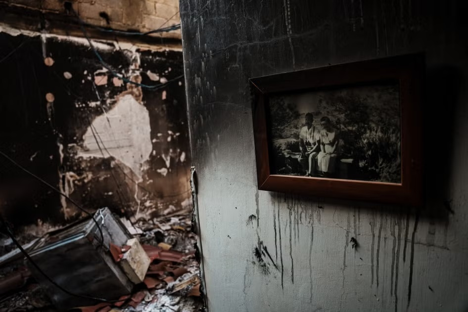
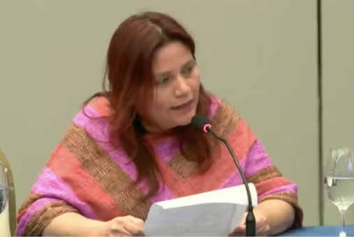
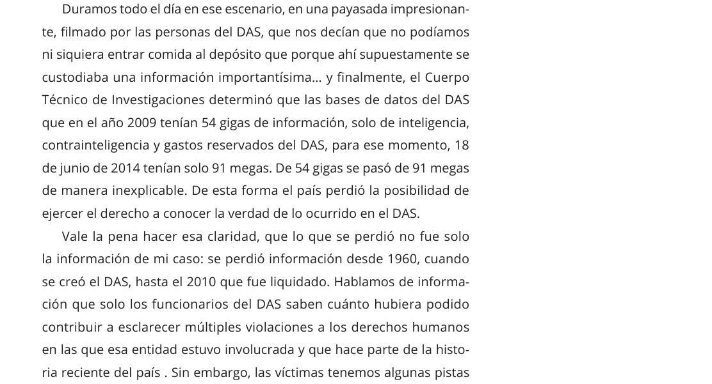
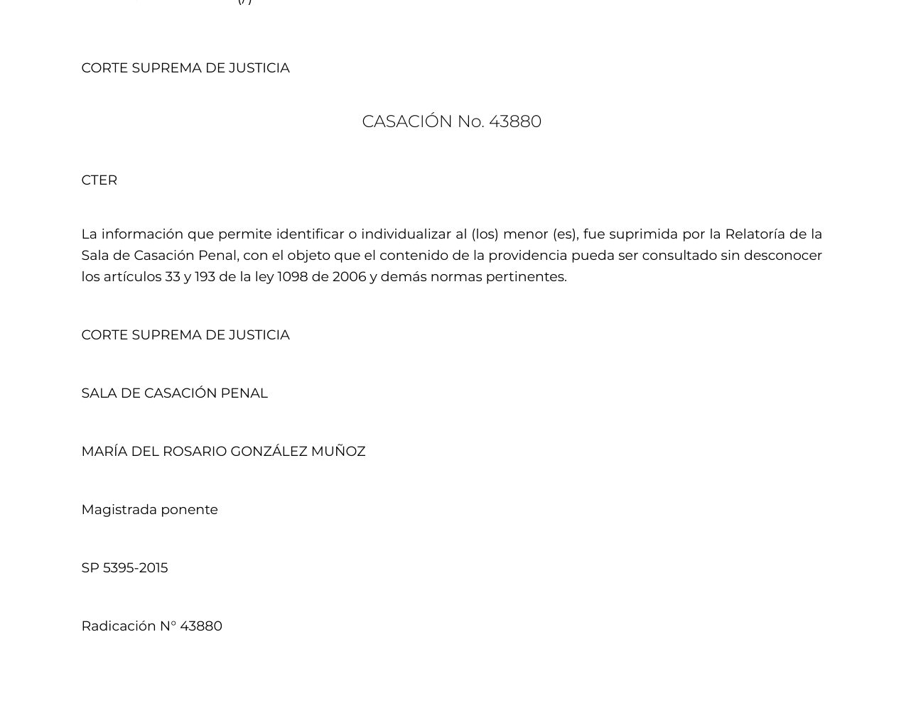
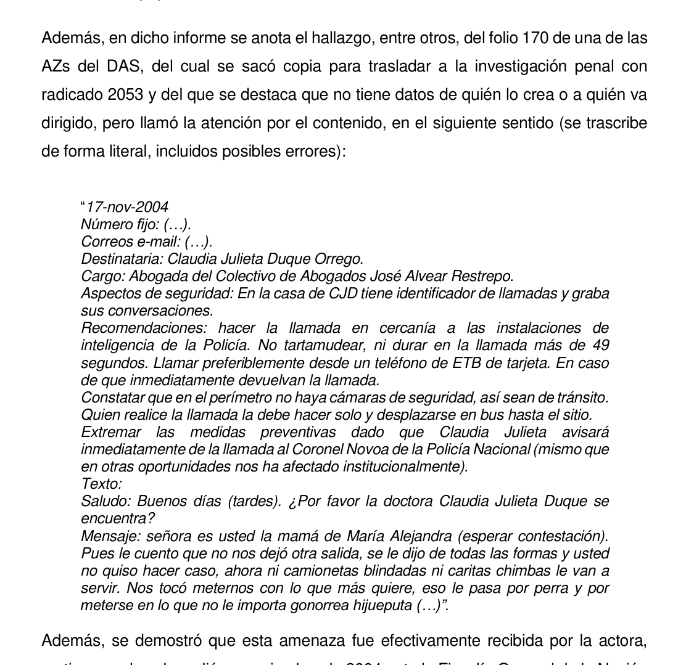
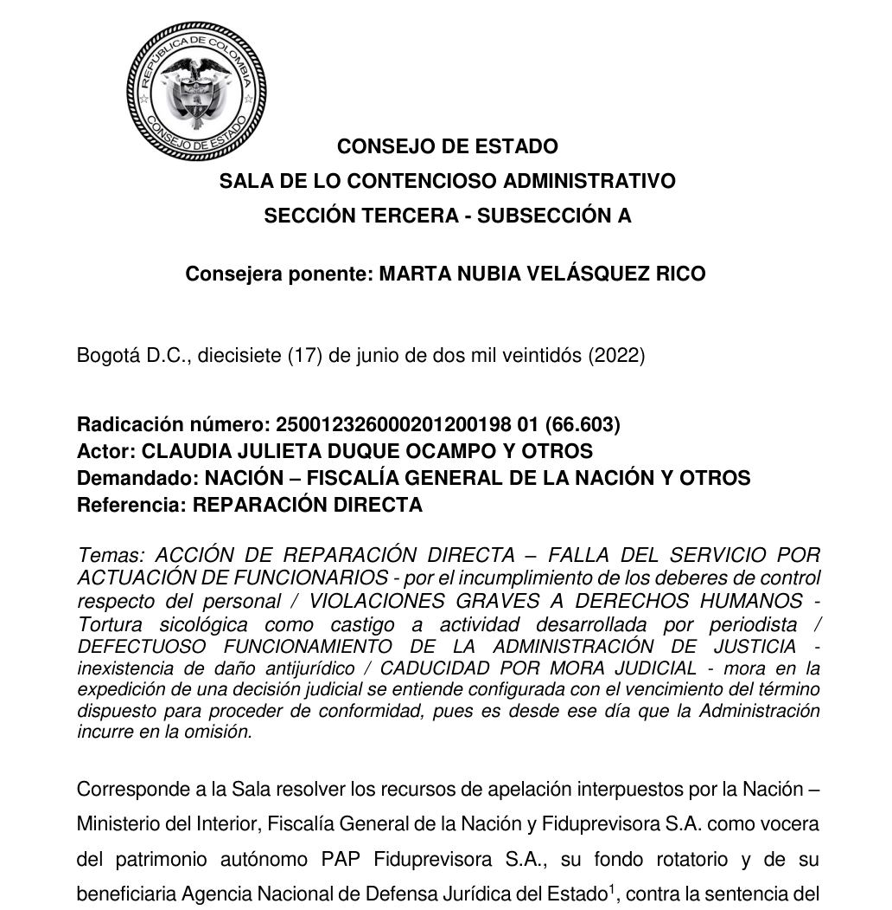
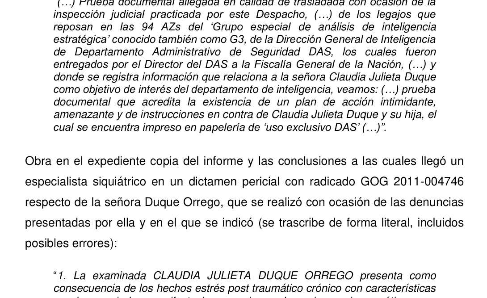
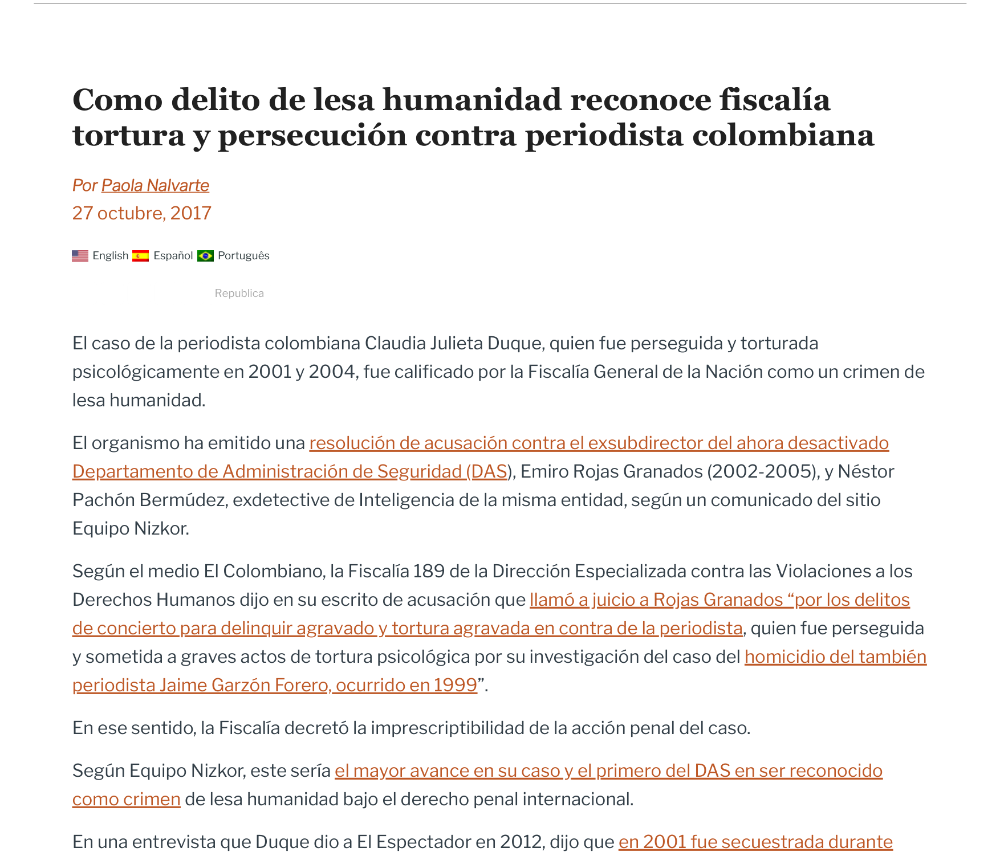
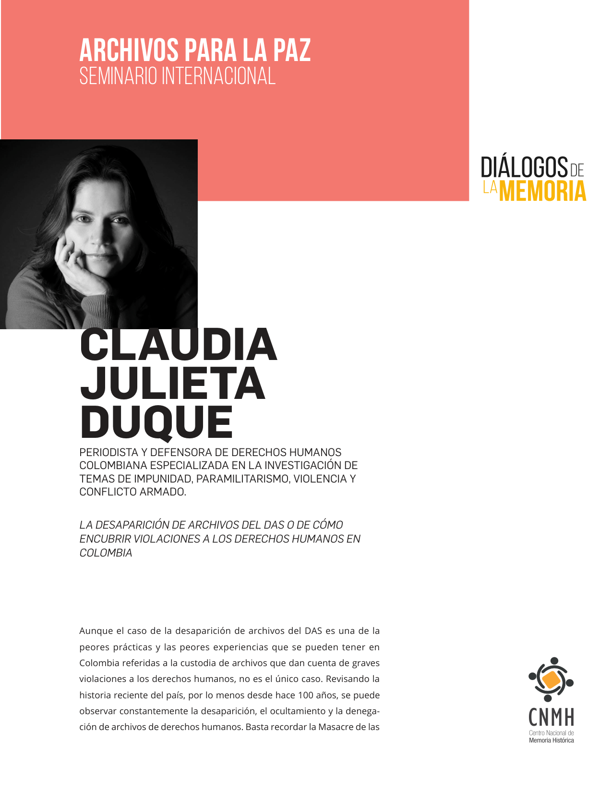
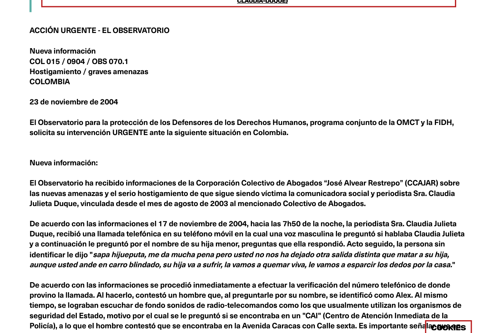

¿Puede una campaña prolongada de hostigamiento, amenazas de muerte contra una menor de edad, interceptación ilegal y guerra psicológica desplegada por un organismo estatal de inteligencia contra una periodista independiente subsumirse en el crimen de lesa humanidad de persecución (Art. 7.1.h Estatuto de Roma), aun cuando el ordenamiento interno colombiano haya procesado las conductas bajo el tipo penal de tortura psicológica agravada y concierto para delinquir?
Claudia Julieta Duque y el Aparato de Inteligencia
El choque entre el periodismo de investigación sobre el magnicidio de Jaime Garzón y la doctrina contrainsurgente del extinto DAS.
Claudia Julieta Duque Orrego
Investigadora de Radio Nizkor y defensora de derechos humanos. Descubrió que el DAS desvió el expediente de Jaime Garzón sembrando testigos falsos.
Departamento Administrativo de Seguridad (DAS)
Organismo de inteligencia adscrito a la Presidencia de la República. Creó la estructura clandestina "Grupo G-3" para neutralizar a la oposición y prensa crítica.
Evolución de los Hechos (1999 – 2022)
Selecciona un año en la barra para explorar los acontecimientos, piezas probatorias facsimilares y decisiones judiciales.
Los Elementos del Chapeau (Art. 7 Estatuto de Roma)
Para que un acto trascienda el delito común y adquiera la gravedad de crimen de lesa humanidad, debe cumplir con los requisitos umbral del Chapeau.

El concepto nació en el Estatuto de Nuremberg (1945) condicionado a la existencia de guerra. Con los tribunales ad hoc para Ruanda (TPIR) y la antigua Yugoslavia (TPIY), y definitivamente en el Art. 7 del Estatuto de Roma (1998), se consolidó como una categoría autónoma en tiempos de paz o de conflicto.
Haz clic en cada pilar para comprobar si los hechos del caso Duque satisfacen las exigencias del Art. 7:
En el delito común se lesiona a la persona individual; en lesa humanidad se lesiona a la humanidad entera en su dignidad colectiva.
Los crímenes comunes prescriben con el tiempo. Los crímenes de lesa humanidad son imprescriptibles e inamnistiables.
Exige que el autor actúe amparado por un aparato organizado de poder o ejecute una política institucional.
Desarrollo Específico del Crimen de Persecución
La privación intencional y grave de derechos fundamentales por motivos discriminatorios y su conexión con otros actos inhumanos.
"Por 'persecución' se entenderá la privación intencional y grave de derechos fundamentales en violación del derecho internacional en razón de la identidad del grupo o de la colectividad."

El Asedio en 5 Fases Operacionales
Despliegue escalonado de operaciones psicológicas encubiertas ejecutadas por el DAS contra Claudia Julieta Duque.
Interceptación y Secuestro
Seguimientos directos en taxis de inteligencia y secuestro express en Bogotá advirtiéndole no seguir en el caso Jaime Garzón.
G-3 y Amenazas Letales
Creación del Grupo G-3. Redacción del instructivo manuscrito del 17 de noviembre de 2004 para aterrorizarla amenazando con torturar a su hija.
Infiltración y Retiro de Protección
Misión 0904: el conductor de su esquema pasa reportes diarios al DAS. Retiro arbitrario de su camioneta blindada por el MinInterior.
"Dígale a Claudia que hágale un favor a la hija, que no la exponga... que sabemos a qué colegio va, que sabemos cuándo sale... que vamos a quemarla viva, que le vamos a cortar los dedos y se los vamos a mandar en una bolsa si sigue metiéndose en lo que no le importa..."
Estructura Jerárquica del DAS y el Grupo G-3
Haz clic en cualquier mando o agente para inspeccionar su grado de responsabilidad penal y estado procesal actual.
Matriz Analítica y Calculadora de Tipicidad DPI
Evaluación metodológica de los elementos del Art. 7(1)(h) frente al acervo probatorio del caso.
Activa o desactiva cada elemento acreditado en el expediente para calcular el índice de compatibilidad jurídica con el crimen de lesa humanidad de persecución:
| Elemento | Fundamento Normativo | Hecho Probado | Fuente Principal | Estado |
|---|---|---|---|---|
| 1. Privación Grave de DDHH | Estatuto de Roma Art. 7.1.h; CADH Arts. 5, 7, 13, 22 | 3 exilios forzados, secuestro, TEPT crónico, aniquilación de intimidad | DOC-01 p. 48 | Acreditado |
| 2. Grupo Identificable | Art. 7.1.h; TPIY Kupreskic párr. 621 | Periodistas de investigación independientes y defensores de DDHH | DOC-02 p. 1-4 | Acreditado |
| 3. Motivo Discriminatorio | Art. 7.1.h (motivo político); TPIY Kordic párr. 193 | Calificada expresamente como 'traficante de DDHH' por sus denuncias | DOC-01 p. 7, 44 | Acreditado |
| 4. Cláusula de Conexión | Art. 7.1.h en conexión con 7.1.f (tortura) y 7.1.k (inhumanos) | Conexión directa con tortura psicológica agravada confesada en sentencias | DOC-01 p. 48-50 | Acreditado |
| 5. Contexto Chapeau | Art. 7.1 Chapeau; TPIR Semanza párr. 326 | Campaña sistemática ejecutada por el DAS contra más de 100 blancos | DOC-02 p. 2-5 | En Juicio |
| 6. Autoría y Cadena de Mando | Estatuto de Roma Art. 25 y 28; Dogmática Roxin | Transmisión vertical de órdenes en el DAS mediante gastos reservados | DOC-01 p. 46; DOC-03 | En Debate |
Decisiones Judiciales y Comparador de Instancias
El contraste entre la responsabilidad extracontractual del Estado y las actuaciones penales individuales.
Sentencia Rad. 66.603 (17 Junio 2022)
Declara patrimonial y extracontractualmente responsable al DAS en un 70% por los perjuicios morales y a la salud causados por tortura psicológica y persecución.
Resolución de Acusación (Octubre 2017)
Llama a juicio a Emiro Rojas Granados y Néstor Pachón Bermúdez, y califica expresamente los hechos como Crimen de Lesa Humanidad en el marco del Art. 7 del Estatuto de Roma.
La demanda fue oportuna porque sus actos se prolongaron hasta su disolución en 2011 y no operó el término de caducidad.
El Consejo de Estado aplicó el plazo de 2 años desde 2004 por la desviación del caso Garzón, denegando inaplicar caducidad en sede contenciosa.
El retiro indebido del blindado ocurrió en agosto de 2007; al demandarse en 2012, la acción había caducado formalmente.
Límites Probatorios y Destrucción Masiva de Archivos
El borrado intencional del 99.8% de las bases de datos de inteligencia y el análisis estricto de fuentes primarias.

El informe forense del CTI citado por el CNMH constató que mientras en los servidores centrales del DAS se compilaron más de 54.000 Megabytes de información de inteligencia clandestina, el Archivo General de la Nación sólo recibió 91 Megabytes (menos del 0.2%). El resto fue triturado y borrado con software militar para garantizar impunidad.

El archivo Corte Suprema de Justicia... SP5395-2015.pdf está incompleto (sólo la carátula) y corresponde al Radicado 43880 (delito de acceso carnal violento), sin relación jurídica ni fáctica con Claudia Julieta Duque ni con el DAS. Un análisis riguroso exige descartar su uso como prueba para evitar afirmaciones espurias.
Aportes al Derecho Penal Internacional
El valor dogmático del caso Claudia Julieta Duque para la protección universal del periodismo de investigación.
Fija un precedente universal: silenciar sistemáticamente a la prensa crítica no es un mero conjunto de amenazas ordinarias, sino un ataque que desarticula el control democrático y califica como crimen de persecución.
La tortura no requiere cicatrices físicas visibles. La destrucción del bienestar psíquico, la zozobra constante y la inducción de terror mediante amenazas a menores de edad constituyen actos inhumanos graves amparados por el Protocolo de Estambul.
La calificación de lesa humanidad adoptada por la Fiscalía y respaldada por el Consejo de Estado impide que las dilaciones procesales de más de 20 años extingan la responsabilidad penal de los máximos determinadores.
"El DAS no me perseguía por ser Claudia Julieta Duque; me perseguía por lo que mi voz revelaba. Destruir mi mente era destruir las verdades que el Estado colombiano no quería que el país conociera."
Galería Visual de Pruebas y Expedientes
Explora las fotografías históricas, facsímiles de sentencias y documentos de inteligencia que sustentan la investigación.






Simulador Jurídico DPI: Caso Duque vs. DAS
Demuestra tu dominio sobre el crimen de persecución y el Estatuto de Roma respondiendo estas 5 preguntas interactivas.